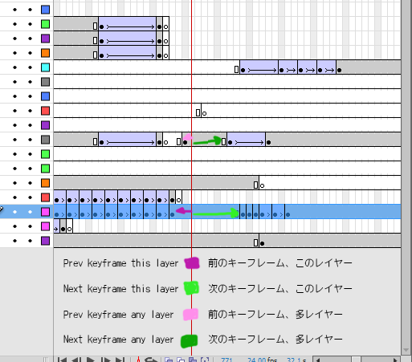

Timeline タイムライン

 Prev Keyframe 前のキーフラム
Prev Keyframe 前のキーフラム
Recommended keyboard shortcut: [
おすすめのキーボードショートカット [
 Next Keyframe 次のキーフラム
Next Keyframe 次のキーフラム
Recommended keyboard shortcut: ]
おすすめのキーボードショートカット ]
 Prev Keyframe (Any layer)
Prev Keyframe (Any layer)
前のキーフラム（多レイヤー）
Recommended keyboard shortcut: Shift+[
おすすめのキーボードショートカット Shift+[
 Next Keyframe (Any layer)
Next Keyframe (Any layer)
次のキーフラム（多レイヤー）
Recommended keyboard shortcut: Shift+]
おすすめのキーボードショートカット Shift+]